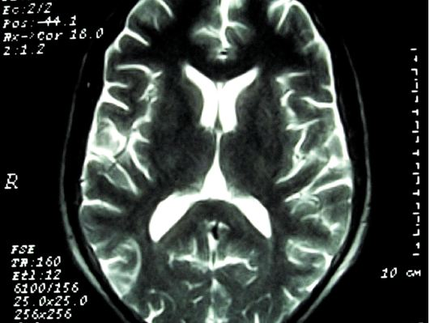

Amping Up Your Memory
Smart drugs and ampakines
Whitney McFadden
Spring 2006

It is hard to believe that popping a pill can help you ace a test or
help you remember where you left those missing car keys. For the time
being, these claims remain purely hypothetical. However, Gary Lynch,
PhD, of the department of psychiatry at the University of California,
Irvine, may have paved the way in developing a new class of
mind-altering drugs by developing a set of compounds known as
ampakines. These medications are testing the limits of our cognitive
capacity and expanding the realm of long and short-term memory
retention. Despite such positive implications for the drug, ethical
dilemmas have arisen concerning the usage of the drug for healthy
populations.
What sets ampakines apart from traditional
pyschostimulants, such as amphetamines, cocaine, or even caffeine?
Traditional psychostimulants, in appropriate doses, can improve
vigilance and focus attention. Modafinil, sold as Provigil®, is
frequently taken by many college students as a study enhancer despite
its intended use as a therapy drug for narcolepsy. Unfortunately,
modafinil has several side effects; while this drug alters sleep habits
and alleviates narcolepsy, it may also cause anxiety and affect judgment
and motor skills. In contrast, ampakines do not produce the unwanted
side-effects of anxiety and nervousness common to traditional
prescription and over-the-counter stimulants. Ampakines differ from
other stimulants at the biochemical level; they affect the glutamatergic
system, whereas other stimulants affect the serotonergic and adrenergic
systems.
Many nuclei in the brain—especially those in the
hippocampus—are implicated in memory formation and learning. A large
number of the neurons within these structures contain
alpha-amino-3-hydroxy-5-methyl-4-isoxazolepropionic acid (AMPA)
receptors within their plasma membranes that, when bound to glutamate,
will activate the neuron. The membrane depolarization that is
subsequent to this activation can lead to the activation of
N-methyl-D-aspartate (NMDA) receptors that have also bound glutamate.
These NMDA receptors, in turn, have long been known to function in long
term potentiation, or LTP. After LTP has occurred at a synapse, that
synapse is strengthened—for a given pre-synaptic release of glutamate,
a larger post-synaptic response is evoked than before LTP induction.
Part of this increased post-synaptic response is the result of
heightened expression of AMPA receptors on the surface of the
postsynaptic cell. Many neuroscientists believe that the strengthening
of synaptic connection by LTP is the cellular correlate of memory
formation because it represents an event in which previous activity in
a neuron can cause greater activity in that same neuron in the future.
Mu-Ming Poo, PhD, of Department of Neurobiology at the University of
California, Berkeley expands on the importance of synapse
strengthening, noting that “the best situation is when the synapse
works more efficiently. General enhancement of synaptic transmission
facilitates the learning process.”
The glutamatergic system’s involvement in phenomena
such as LTP prompted Lynch and others to investigate molecules that
target glutamate receptors. They reasoned that since ampakines target
only those cells that are actively participating in encoding memory,
these drugs could enhance memory without affecting mood, motor
functions, or sleep habits as do other stimulants. Because of this
selectivity, only small doses are needed to elicit an enhanced level of
cognition during the day, leaving sleep at night unaffected.
In his recent publication “Memory Enhancement: The
Search for Mechanism-Based Drugs,” which appeared in the November 2005
issue of Nature Neuroscience, Lynch explains that ampakines act as
allosteric regulators of AMPA receptors. Glutamate has a higher binding
affinity for ampakine-bound AMPA receptors, and thus the release of a
given amount of glutamate elicits a larger response in the presence of
ampakines. In other words, ampakines induce LTP-like effects.
Lynch has been working with CX516, a form of the
drug that passed phase I clinical trials, which test for the safety and
kinetics of the drug, and is currently being tested in phase II
clinical trials that test for safety and effectiveness. However, he
believes that CX516 is not potent enough to be highly effective on a
widespread scale. At the University of Surrey in the United Kingdom,
researcher Julia Boyle, PhD, has already conducted phase II clinical
trials on CX717, which is a stronger derivative of the milder CX516
drug.